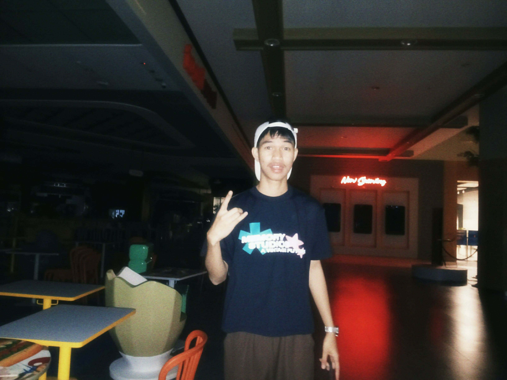

Bachelor of Science in Information Technology with Specialization in Mobile and Web Applications

Hello! I am Jade Ashley Bino, a student at National University and currently taking up the Bachelor of Science in Information Technology with Specialization in Mobile and Web Applications. I have a passion for learning new technologies and building creative projects.
Feel free to reach out to me via email at: binojp@students.national-u.edu.ph